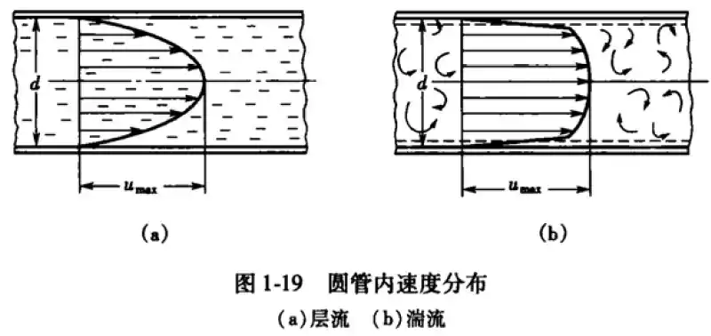
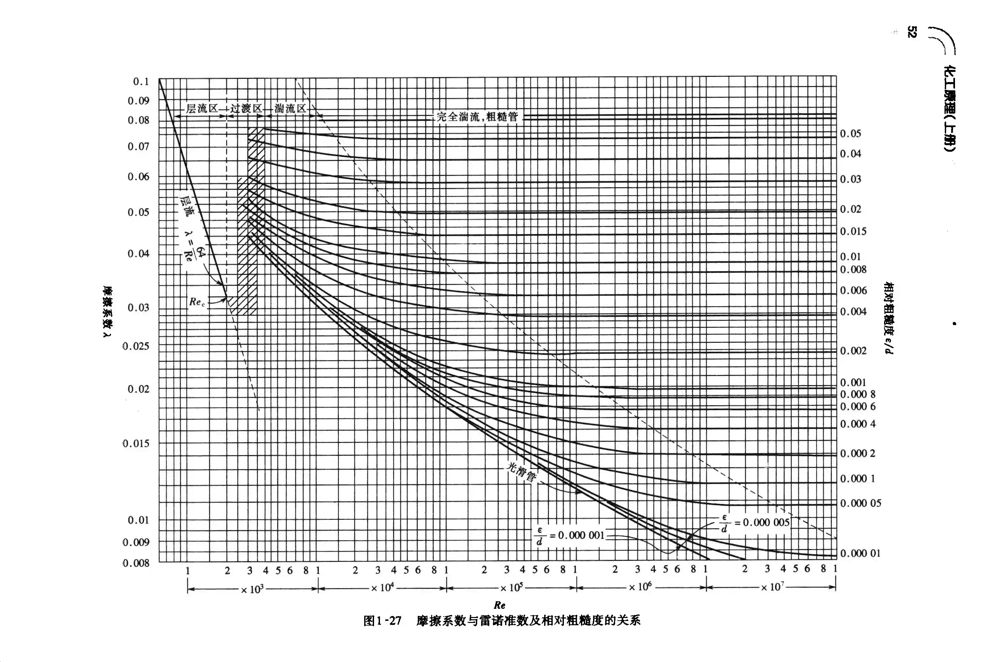

文章大纲
流体静力学
流体的压力
\[\bbox[yellow]{p_{绝}=p_{大气}+p_{表}=p_{大气}-p_{真}}\]
流体的密度
\[\rho=\dfrac{m}{V}\\ \rho :kg/m^{3}\]
气体密度（压力不太高，温度不太低）： \[pV=nRT=\dfrac{m}{M}RT\\ \rho=\dfrac m V =\dfrac{pM_m}{RT}\] \[\begin{align}p&:绝对压力，\rm{ kPa }\\ M_m&:摩尔质量，\rm{ kg/kmol }\\ n&:气体的物质的量，\rm{ kmol }\\ R&:8.314\end{align}\]
理想气体标况下即\(T^\ominus=273.15K,p^\ominus=101.325\)时,摩尔体积为\(\rho^\ominus=\dfrac{M}{22.4}\)
流体的比体积
单位质量流体的体积 \[v=\dfrac{V}{m}=\dfrac{1}{\rho}\\ v:\rm{ m^3/kg }\]
静力学基本方程式
\[p=p_0+\rho gh\\ h=\dfrac{p-p_0}{\rho g}\]
适用于气体和液体
液体密度可视为常数，而气体密度随容器高低变化甚微，也可视为常数
流体流动的基本方程式
流量与流速
流量
体积流量\(q_V:\)单位时间内流体流经管路任一截面的体积称为体积流量，单位：\(\rm{ m^3/s }\)
质量流量\(q_m:\)单位时间内流体流经管路任一截面的质量称为质量流量，单位：\(\rm{ kg/s }\)
\[q_m=\rho q_V\]
流速
平均流速\(u:\)单位时间内流体质点在流动方向上所流经的距离，简称流速，m/s。 \[u=\dfrac{q_V}{A},q_V=Au,A=\dfrac{\pi d^2}{4},d=\sqrt{\dfrac{q_V}{0.785u}}\\ q_m=\rho q_{V}=\rho Au\]
质量流速\(w:\)单位时间内流体经管路截面的质量，单位为\(\rm{ kg/(m^2\cdot s) }\)
\[\omega=\dfrac{q_m}{A}=\dfrac{\rho Au}{A}=\rho u\]
连续性方程与伯努利方程式
连续性方程
在连续稳定的不可压缩流体的流动中
\[\rho Au=q_m=C\\ \dfrac{u_1}{u_2}=(\dfrac{d_2}{d_1})^2\]
若流体不可压缩，\(\rho=C\)
\[Au=C\]
伯努利方程式
\[\bbox[yellow]{g Z_{1}+\frac{u_{1}^{2}}{2}+\frac{p_{1}}{\rho}+W_{e}=g Z_{2}+\frac{u_{2}^{2}}{2}+\frac{p_{2}}{\rho}+\Sigma h_f}\]
伯努利方程式的物理意义
\(gZ\)为单位质量(\(1\rm{ kg }\))流体所具有的位能。因为质量为\(m\)的流体,其与水平基准面的距离为\(Z\)时,则其位能为\(mgZ\),所以单位质量流体的位能为\(gZ\),其单位为 \[\rm{ \dfrac{kg\cdot \dfrac{m}{s^2}\cdot m}{kg}=\dfrac{N\cdot m}{kg}=\dfrac{J}{kg} }\]
\(\dfrac{p}{\rho}\)为单位质量流体所具有的静压能。流动流体中的流体压力通常称为静压。因用测压管可测出它能使流体提升一定高度(\(h=p/\rho g\)), 这一高度的液柱相对流动的液体来说是静止状态,其单位为\(\rm{ \dfrac{N/m^2}{kg/m^3}=\dfrac{N\cdot m}{kg}=\dfrac{J}{kg} \\ }\)
\(\dfrac{u^2}{2}\)为单位质量流体所具有的动能。因质量为\(m\)、速度为\(u\)的流体所具有的动能为\(mu^2/2\),故\(u^2/2\)为单位质量流体的动能,其单位为 \(\rm{ \dfrac{kg\cdot \dfrac{m^2}{s^2}}{kg}=\dfrac{kg\cdot \dfrac{m}{s^2}\cdot m}{kg}=\dfrac{N\cdot m}{kg}=\dfrac{J}{kg} \\ }\)
位能、静压能及动能均属于机械能,三者之和称为总机械能或总能量
\[\bbox[yellow]{ N_{\rm{e}} }=W_{\rm{e}} w_{\rm{s}}\bbox[yellow]{ =W_eV_s\rho }\] \[\begin{align}W_e&:输送设备对单位质量流体所做的有效功,\rm{ J/kg }\\N_e&:单位时间输送设备所做的有效功称为有效功率,\rm{J} / \rm{s}或\rm{ W }\\w_{\rm{s}}&:流体的质量流量,\rm{ kg/s }\\V_s&:体积流量,\rm{ m^3/s }\end{align}\]
伯努利方程式表明, 这3种形式的能量可以相互转换,但总能量不会有所增减,即三项之和为一常数
所以,伯努利方程式是单位质量流体能量守恒方程式。
以单位重量流体为衡算基准的伯努利方程式
\[ Z_1+\frac{u_1^2}{2 g}+\frac{p_1}{\rho g}+\frac{W_e}{g}=Z_2+\frac{u_2^2}{2 g}+\frac{p_2}{\rho g}+\frac{\Sigma h_f}{g} \] 令 \(H_{\mathrm{e}}=\dfrac{W_{\mathrm{e}}}{g}, H_{\mathrm{f}}=\dfrac{\Sigma h_{\mathrm{f}}}{g}\)
则 \(Z_1+\frac{u_1^2}{2 g}+\frac{p_1}{\rho g}+H_e=Z_2+\frac{u_2^2}{2 g}+\frac{p_2}{\rho g}+H_{\mathrm{r}}\)
上式各项的单位为 \(\rm{ \dfrac{N \cdot m}{kg \cdot \frac{m}{s^2}}=N \cdot m / N=m }\), 表示单位重量的流体所具有的能量。各项单位还 可简化为\(\mathrm{m}\)。\(\mathrm{m}\)虽是一个长度单位, 但在这里却反映了一定物理意义, 它表示单位重量流体所具有的机械能可以把自身从基准水平面升举的高度。常把 \(Z, \dfrac{u^2}{2 g} 、 \dfrac{p}{\rho g}\) 与 \(H_{\mathrm{f}}\) 分别称为位压头、动压头、静压头与压头损失, \(H_{\mathrm{e}}\) 则称为输送设备对流体所提供的有效压头。
流体流动现象
流体的黏度
牛顿黏度定律： \[\tau=\mu\dfrac{du}{dy}\\ \nu=\dfrac{\mu}{\rho}\]
\[\begin{align}\mu&:\text{黏度系数/动力黏度/黏度},\rm{ Pa\cdot s }\\ \nu&:运动黏度，\rm{ m^2/s }\end{align}\]
剪应力\(\tau\): 通过公式\(F=\tau A\)可求出粘滞力
雷诺数与流体类型
\[Re=\dfrac{du\rho}{\mu}=\dfrac{du}{\nu}\]
\[\begin{align}d&:管径\\ u&:流体的流速\\ \rho&:流体密度\\ \mu&:流体的黏度\end{align}\]
流体流动类型的判断： \[Re= \begin{cases} \begin{align}0-2000&:层流\\ 2000-4000&:过渡区\\ 4000&:湍流 \end{align}\end{cases}\]
雷诺准数不是流体的物理性质之一。
层流与湍流的本质区别是层流无径向脉动，而湍流有。
流体在圆管内流动时的速度分布

层流
- 在某一压力差\(△p\)之下，\(u_{r}\) 与r的关系为抛物线方程。
- 管中心处的速度为最大流速\(u_{max}\)
- 圆管截面平均速度与最大速度的关系为\(\bbox[yellow]{ u_{max}=2u }\)
湍流
当\(Re\)值愈大时，曲线顶部的区域就愈广阔平坦，但靠管壁处质点的速度骤然下降，曲线较陡。
流体在管内的流动阻力
流体在直管的流动阻力
圆直管阻力通式
范宁公式（适用层流&湍流）：
\[\bbox[yellow]{h_f=\lambda \dfrac{l}{d}\dfrac{u^2}{2}}\]
\[\bbox[yellow]{ \Delta p_f=\rho h_f=\lambda\dfrac{l}{d}\dfrac{\rho u^2}{2} }\] \(\Delta p_{f}\) - 1 \(\rm{m^{3}}\)流体流动时损失的机械能，或因克服流动阻力而引起的压力降，\(\rm{ Pa }\);
层流和完全湍流下的压强降比
某液体在内径为\(d_1\)的水平管路稳定流动，其平均流速为\(u_1\),当他以相同的体积流量通过内径为\(d_2\) \((d_2＝d_1/2)\)的管子时，若流动为层流时，管子两端压力降\(Δp_f\)是原来的16倍。若流动为完全湍流（阻力平方区） 压力降为原来的32倍。
管壁粗糙度
绝对粗糙度：\(\epsilon\ \rm{ (mm) }\)
相对粗糙度：\(\epsilon/d\)
在一定的\(Re\)条件下，管壁粗糙度越大，则流体的摩擦阻力损失就越大。
粗糙度对阻力系数的影响
由图可知，粗糙度对层流和过渡区几乎没有任何影响。因此，对于圆管内的层流或过渡区流动，可以不必区分光滑管和粗糙管。但对于圆管内的湍流，就必须加以区分，因为此时粗糙度严重地影响阻力系数的数值。 摩擦系数
层流
\[\bbox[yellow]{ \lambda }=\dfrac{64}{\frac{dup}{\mu}}=\bbox[yellow]{ \dfrac{64}{Re} }\]
达西摩擦系数与范宁摩擦系数
摩擦因子有两种定义，分别是范宁摩擦因子\(f\) (fanning friction factor) 与达西摩擦因子\(\lambda\) (Darcy friction factor)。
\[\lambda=\dfrac{64}{Re}=4f=4\times\dfrac{16}{Re}\]
若无特别说明，《化工原理》中的摩擦系数均指达西摩擦因子\(\lambda\)，而《化工传递过程原理》中的摩擦系数均指范宁摩擦因子\(f\)。
范宁摩擦系数的物理意义为：\[f=\dfrac{\tau}{\frac{1}{2}\rho U^{2}}\]但考虑阻力损失的时候用达西比较方便。湍流
Blasius关联式: \[\lambda=\dfrac{0.3164}{Re^{0.25}}\quad(Re=3\times 10^3 \sim 2\times 10^5)\]
对于高度湍流，摩擦系数仅与相对粗糙度有关，而与雷诺数无关。对于一般湍流，摩擦系数随Re增大而减小。
其余查图1-27，根据\(Re\)及\(\dfrac{\epsilon}{d}\)的关联式获得\(\lambda\)值。
层流与湍流对比总结
| 流型 | 层流 | 湍流 | |
|---|---|---|---|
| 本质差别 | 无径向脉动 | 有径向脉动 | |
| Re 范围 | Re<2000或2300 | Re>4000 | |
| \(u/v_{max}\) | 1/2 \(v=v_{max}\left[1-\left(\dfrac{r}{R}\right)^2\right]\) | 0.817 \(v=v_{max}\left(1-\dfrac{r}{R}\right)^{1/7}\) | |
| λ与Re数关系 | λ=64/Re | 高度湍流 | λ与Re无关 |
| 一般湍流 | λ随Re增大而减小 | ||
| λ与\(\epsilon/d\)关系 | 无关 | λ随ε/d增大而增大 | |
非圆形管的当量直径
水力半径：\[r_H=\dfrac{流通截面积A}{润湿周边长度\prod}\]
圆形管的水力半径：\[r_H=\dfrac{\pi d^2/4}{\pi d}=\dfrac{d}{4}\longrightarrow d=4r_H\]
推广到非圆形管，当量直径\[\bbox[yellow]{ d_e }=4r_H\bbox[yellow]{ =\dfrac{4A}{\prod} }\]
对于矩形管\[d_e=\dfrac{4ab}{2(a+b)}=\dfrac{2ab}{a+b}\]
管路上的局部阻力
阻力系数法
\[h_f=\zeta \dfrac{u^2}{2}\\ \zeta:局部阻力系数，由实验测定\]
当量长度法
\[h_f=\lambda\dfrac{l_e}{d}\dfrac{u^2}{2}\]
总摩擦力损失计算式
\[\sum h_f=h_{f直管}+h_{f局部} =\lambda\bigg(\dfrac{l+\sum l_e}{d}\bigg)\dfrac{u^2}{2}=\bigg(\lambda \dfrac{l}{d}+\sum\zeta\bigg)\dfrac{u^2}{2}\]
管路计算
管路计算是连续性方程式、伯努利方程式、摩擦阻力损失计算式、摩擦系数计算式及\(Re\)表达式的具体应用。
- 设计型计算是给定流体输送任务,要求设计者计算所需管长和管径,选择经济合理的管路及输送设备。
- 操作型计算是对指定的管路系统，核算是否能够完成输送任务，或者核算当某些操作参数改变时原有管路系统能否完成输送任务
流量的测定
转子流量计为等压差变截面流量计,而测速管、孔板流量计、文丘里流量计均属于变压差定截面流量计。
测速管 (毕托管)
\[u_{\mathrm{z}}=\sqrt{\frac{2 g R\left(\rho_0-\rho\right)}{\rho}}\]
孔板流量计
\(\bbox[yellow]{ V_{\mathrm{s}}=C_0 A_0 \sqrt{\dfrac{2 g R\left(\rho_0-\rho\right)}{\rho}} }\), 其中 \(C_0\) 一般取 \(0.6 \sim 0.7\) 。
转子流量计
\[V_{\mathrm{s}}=C_{\mathrm{r}} A_{\mathrm{r}} \sqrt{\frac{2 g\left(\rho_{\mathrm{i}}-\rho\right) V_{\mathrm{f}}}{\rho A_{\mathrm{r}}}}\]
其中 \(C_{\mathrm{r}}\) - 转子流量系数约等于 1 ; \(A_{\mathrm{r}}-\) 环隙截面积, \(\mathrm{m}^2\); \(A_{\mathrm{f}}-\) 最大截面积, \(\mathrm{m}^2\); \(V_1\) - 转子体积, \(\mathrm{m}^3\); \(\rho_{\mathrm{r}}\)-转子材料密度, \(\mathrm{kg} / \mathrm{m}^3\) 。
文丘里流量计
\[ V_s=C_{\rm{ v }}A_{0}\sqrt{\frac{2(p_{a}-p_{0})}{\rho}} \] 式中 \(C_{V}\) - 流量系数，量纲为1，其值可由实验测定或从仪表手册中查得; \(p_1-p_{0}\) -截面1与截面0间的压力差，单位为\(\rm{ Pa }\)，其值大小由压差计读数\(R\)来确定; \(A_{0}\)--喉管的截面积，\(m^{2}\); \(p\)--被测流体的密度，\(kg/m^{3}\)。


发表您的看法